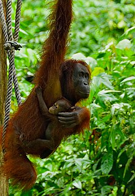
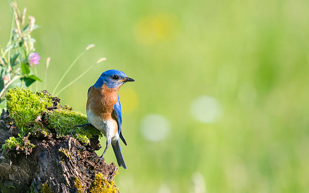

Biodiversity
Fauna and flora" redirects here. For the organization, see Fauna and Flora International.A sampling of fungi collected during summer 2008 in Northern Saskatchewan mixed woods, near La Ronge, is an example regarding the species diversity of fungus. In this photo, there are also leaf lichens and mosses.
Biodiversity or biological diversity is the variety and variability of life on Earth. Biodiversity is a measure of variation at the genetic (genetic variability), species (species diversity), and ecosystem (ecosystem diversity) level.[1] Biodiversity is not distributed evenly on Earth; it is usually greater in the tropics as a result of the warm climate and high primary productivity in the region near the equator.
Tropical forest ecosystems cover less than 10% of earth's surface and contain about 90% of the world's species.
Marine biodiversity is usually higher along coasts in the Western Pacific, where sea surface temperature is highest, and in the mid-latitudinal band in all oceans.
There are latitudinal gradients in species diversity.
Biodiversity generally tends to cluster in hotspots, and has been increasing through time, but will be likely to slow in the future as a primary result of deforestation.
It encompasses the evolutionary, ecological, and cultural processes that sustain life.[2]
Rapid environmental changes typically cause mass extinctions.
The ongoing global biodiversity crisis not only involves biological extinctions, but also the loss of experience and the gradual fading of cultural knowledge and collective memory of species.
More than 99.9% of all species that ever lived on Earth, amounting to over five billion species, are estimated to be extinct. Estimates on the number of Earth's current species range from 10 million to 14 million, of which about 1.2 million have been documented and over 86% have not yet been described.
The total amount of related DNA base pairs on Earth is estimated at 5.0 x 1037 and weighs 50 billion tonnes.
In comparison, the total mass of the biosphere has been estimated to be as much as four trillion tons of carbon.
In July 2016, scientists reported identifying a set of 355 genes from the last universal common ancestor (LUCA) of all organisms living on Earth.
The age of the Earth is about 4.54 billion years. The earliest undisputed evidence of life dates at least from 3.7 billion years ago, during the Eoarchean era after a geological crust started to solidify following the earlier molten Hadean eon.
There are microbial mat fossils found in 3.48 billion-year-old sandstone discovered in Western Australia. Other early physical evidence of a biogenic substance is graphite in 3.7 billion-year-old meta-sedimentary rocks discovered in Western Greenland. More recently, in 2015, "remains of biotic life" were found in 4.1 billion-year-old rocks in Western Australia. According to one of the researchers, "If life arose relatively quickly on Earth...then it could be common in the universe."[4]
Since life began on Earth, five major mass extinctions and several minor events have led to large and sudden drops in biodiversity. The Phanerozoic aeon (the last 540 million years) marked a rapid growth in biodiversity via the Cambrian explosion—a period during which the majority of multicellular phyla first appeared. The next 400 million years included repeated, massive biodiversity losses classified as mass extinction events. In the Carboniferous, rainforest collapse led to a great loss of plant and animal life. The Permian–Triassic extinction event, 251 million years ago, was the worst; vertebrate recovery took 30 million years. The most recent, the Cretaceous–Paleogene extinction event, occurred 65 million years ago and has often attracted more attention than others because it resulted in the extinction of the non-avian dinosaurs.
The period since the emergence of humans has displayed an ongoing biodiversity reduction and an accompanying loss of genetic diversity named the Holocene extinction, and often referred to as the sixth mass extinction. The reduction is caused primarily by human impacts, particularly habitat destruction. Conversely, biodiversity positively impacts human health in many ways, although a few negative effects are studied.
Loss of biodiversity
 Mother and child at an orangutan rehab facility in Malaysia Further information: Loss of biodiversity During the last century, decreases in biodiversity have been increasingly observed. It was estimated in 2007 that up to 30% of all species will be extinct by 2050.[44] Of these, about one eighth of known plant species are threatened with extinction.[45] Estimates reach as high as 140,000 species per year (based on Species-area theory).[46] This figure indicates unsustainable ecological practices, because few species emerge each year.The rate of species loss is greater now than at any time in human history, with extinctions occurring at rates hundreds of times higher than background extinction rates.[45][47][48] and expected to still grow in the upcoming years.[48][49][50] As of 2012, some studies suggest that 25% of all mammal species could be extinct in 20 years.[51] In absolute terms, the planet has lost 58% of its biodiversity since 1970 according to a 2016 study by the World Wildlife Fund.
The Living Planet Report 2014 claims that "the number of mammals, birds, reptiles, amphibians, and fish across the globe is, on average, about half the size it was 40 years ago". Of that number, 39% accounts for the terrestrial wildlife gone, 39% for the marine wildlife gone and 76% for the freshwater wildlife gone.
Biodiversity took the biggest hit in Latin America, plummeting 83 percent. High-income countries showed a 10% increase in biodiversity, which was canceled out by a loss in low-income countries. This is despite the fact that high-income countries use five times the ecological resources of low-income countries, which was explained as a result of a process whereby wealthy nations are outsourcing resource depletion to poorer nations, which are suffering the greatest ecosystem losses.[53] A 2017 study published in PLOS One found that the biomass of insect life in Germany had declined by three-quarters in the last 25 years.
Dave Goulson of Sussex University stated that their study suggested that humans "appear to be making vast tracts of land inhospitable to most forms of life, and are currently on course for ecological Armageddon.
If we lose the insects then everything is going to collapse."[55] In 2020 the World Wildlife Foundation published a report saying that "biodiversity is being destroyed at a rate unprecedented in human history".
The report claims that 68% of the population of the examined species were destroyed in the years 1970 – 2016.[56]  Distribution Distribution of living terrestrial vertebrate species, highest concentration of diversity shown in red in equatorial regions, declining polewards (towards the blue end of the spectrum) (Mannion 2014) Biodiversity is not evenly distributed, rather it varies greatly across the globe as well as within regions.
Among other factors, the diversity of all living things (biota) depends on temperature, precipitation, altitude, soils, geography and the interactions between other species.[57] The study of the spatial distribution of organisms, species and ecosystems, is the science of biogeography.[58][59] Diversity consistently measures higher in the tropics and in other localized regions such as the Cape Floristic Region and lower in polar regions generally. Rain forests that have had wet climates for a long time, such as Yasuní National Park in Ecuador, have particularly high biodiversity.[60][61] Terrestrial biodiversity is thought to be up to 25 times greater than ocean biodiversity.[62] Forests harbour most of Earth's terrestrial biodiversity. The conservation of the world's biodiversity is thus utterly dependent on the way in which we interact with and use the world's forests.
A new method used in 2011, put the total number of species on Earth at 8.7 million, of which 2.1 million were estimated to live in the ocean.[63] However, this estimate seems to under-represent the diversity of microorganisms.[64] Forests provide habitats for 80 percent of amphibian species, 75 percent of bird species and 68 percent of mammal species.
About 60 percent of all vascular plants are found in tropical forests. Mangroves provide breeding grounds and nurseries for numerous species of fish and shellfish and help trap sediments that might otherwise adversely affect seagrass beds and coral reefs, which are habitats for many more marine species.[25] Forests span around 4 billion acres (nearly a third of the earth's land mass) and are home to approximately 80% of the world's biodiversity.
About 1 billion hectares are covered by primary forests. Over 700 million hectares of the world's woods are officially protected.[65][66] The biodiversity of forests varies considerably according to factors such as forest type, geography, climate and soils – in addition to human use.[67] Most forest habitats in temperate regions support relatively few animal and plant species and species that tend to have large geographical distributions, while the montane forests of Africa, South America and Southeast Asia and lowland forests of Australia, coastal Brazil, the Caribbean islands, Central America and insular Southeast Asia have many species with small geographical distributions.[67] Areas with dense human populations and intense agricultural land use, such as Europe, parts of Bangladesh, China, India and North America, are less intact in terms of their biodiversity. Northern Africa, southern Australia, coastal Brazil, Madagascar and South Africa, are also identified as areas with striking losses in biodiversity intactness.[67] European forests in EU and non-EU nations comprise more than 30% of Europe's land mass (around 227 million hectares), representing an almost 10% growth since 1990.[68][69]